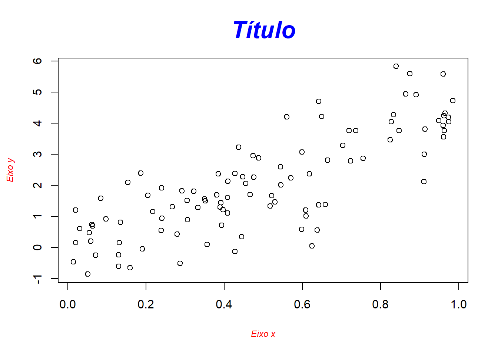

Estatística Básica
R - Estatística Básica
- Estatística Básica
- Gráficos
Medidas Estatísticas Básicas
Funções Básicas
- min() , max()
- sum()
- mean(), median()
- quantile()
- var(), sd()
- summary()
- table()
quaintile
summary
tabela de frequencia
> x=sample(letters[1:5],60,replace=T) #?sample
> x
## [1] "b" "d" "b" "d"
## [5] "d" "a" "c" "a"
## [9] "b" "a" "b" "d"
## [13] "b" "a" "d" "a"
## [17] "b" "a" "b" "d"
## [21] "e" "b" "b" "b"
## [25] "e" "c" "a" "e"
## [29] "b" "d" "c" "d"
## [33] "a" "d" "e" "d"
## [37] "a" "b" "a" "e"
## [41] "e" "c" "a" "a"
## [45] "e" "e" "e" "c"
## [49] "a" "e" "c" "e"
## [53] "a" "c" "e" "a"
## [57] "d" "e" "c" "d"
> table(x)
## x
## a b c d e
## 15 12 8 12 13Exercícios
- Carregue a base de dados votos.txt ([https://tinyurl.com/votos-txt])
- Qual a dimensão do objeto? (linhas e colunas)
- Quais são as variáveis?
- Corrija os nomes das colunas como segue: uf, candidatos, partido, log_votos, sexo, resultado
- Qual a frequencia de partidos e de sexo dos candidatos?
- Qual o partido com a representatividade por sexo mais equilibrada?
- Qual a media de votos dos eleitos?
Gráficos
Gráficos
- Os gráficos são apresentados em janelas gráficas.
- Normalmente há uma única janela gráfica e esta sempre apresentará o último gráfico solicitado.
- No R Studio, estas janelas ficam acumuladas na aba Plots
A função plot()
- Função gráfica genérica do R.
plot(x, y, type=“p”, …)
Multiplos gráficos na Janela ativa
par(mfrow=c(l ,c ))
Criando dados simulados
plot - Argumentos (principais)
Os principais argumentos da função plot()
- type: tipo de gráfico (linhas, pontos, …)
- main: título
- xlab e ylab: título dos eixos
- col: cor (veja colors())
Gráfico de pontos
Gráfico de linhas- opções
barplot -variáveis agrupadas
points- adiciona pontos

abline - adiciona uma reta
text - adiciona texto
title - gerenciando títulos
> plot(x,y,xlab=NA, ylab=NA)
> title("Título", cex.main = 2, font.main= 4,
+ col.main= "blue",xlab = "Eixo x",ylab = "Eixo y",
+ cex.lab = 0.75, font.lab = 3, col.lab = "red")
Parâmetros Gráficos
- para detalhes veja ?par
- font: 1(plain text), 2(bold face), 3 (italic) e 4 (bold italic)
- lty: 0=blank, 1=solid (default), 2=dashed, 3=dotted, 4=dotdash, 5=longdash, 6=twodash
- pch: veja ?points
Funções Gráficas de Baixo Nível
- Points - Adiciona pontos
- text - Adiciona texto
- lines - Adiciona linhas conectando pontos
- abline - Adiciona linha reta
##Funções Gráficas de Baixo Nível - Title - Adiciona título - legend - Adiciona legenda
- identify - identifica pontos interativamente
Multiplos gráficos na Janela ativa
par(mfrow=c(l ,c ))
Funções de Gráficos
- barplot() Gráfico de barras simples
- boxplot() - box plot simples
- hist() - histograma
- dotchart() - Gráfico de pontos
- piechart() - Gráfico de pizza
- qqnorm() - Gráfico quantile-quantile para uma amostra contra a normal padrão
- qqplot quantile-quantile plot para duas amostras
Gráficos melhores
- Para melhores resultados com gráficos use o package \[**ggplot2**\]
- http://www.r-graph-gallery.com/portfolio/ggplot2-package/
Exercícios
- Suponha a variável v2=rnorm(150,1,2). Represente-a em um gráfico de linhas. ([Solução_7.01])
- No gráfico do item 1, inclua outra série, v3=rnorm(150,1,4), em verde escuro. As duas series ficaram bem representadas? ([Solução_7.02])
- Sejam os dados referenes a tres marcas de carros.Faça um gráfico de pontos identificando cada marca. ([Solução_7.03])
| Marca | Vel | Dist |
|---|---|---|
| A | 4 | 2 |
| B | 10 | 18 |
| C | 15 | 20 |
Inclua mais um resultado no gráfico do item 03. Marca D, Velocidade 35 e Distância 25. Use a cor amarela. ([Solução_7.04])
Faça um gráfico de pontos relacionando x e y identificando por cores os grupos grp. (dados simulados - slide Criando dados Simulados) ([Solução_7.05])